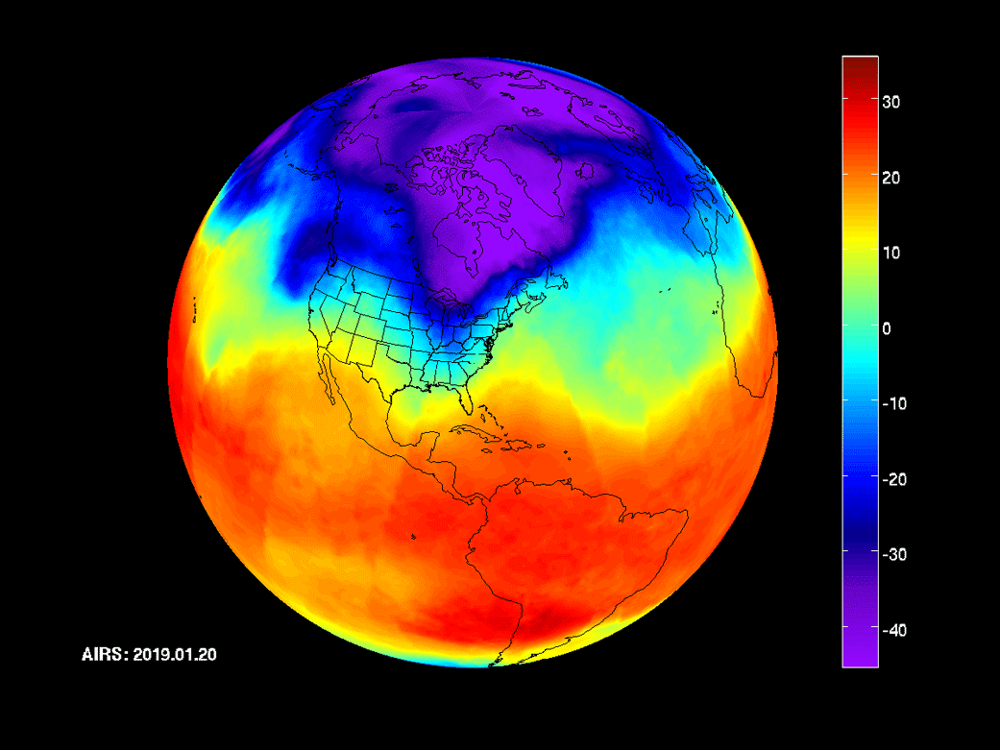

Hvad er polarhvirvlen?
Om vinteren får polarområdet intet sollys. Stratosfæren over Arktis afkøles til omkring −70 °C, mens luften ved samme højde længere mod syd stadig opvarmes af ozonens absorption af ultraviolet lys. Den store temperaturforskel mellem pol og mellembredder giver en kraftig vestenvind, der kredser om polen. Det er den stratosfæriske polarhvirvel. Vinden er stærkest omkring 60°N, hvor den ved 10 hPa typisk blæser 30–50 m/s, og den kaldes også polarnatsjetten.
Sammenhængen mellem temperaturforskel og vind er den termiske vind. For en geostrofisk vind \(u\) i en atmosfære med temperatur \(T\) gælder
Når temperaturen falder mod nord (\(\partial T/\partial y<0\)), vokser vestenvinden med højden. Jo koldere polarnatten er, jo stærkere bliver hvirvlen.
Trykniveauet 10 hPa ligger i en højde, vi kan anslå med den barometriske højdeformel \(z \approx H\ln(p_0/p)\) med skalahøjden \(H\approx 7\) km: \(z\approx 7\ \text{km}\cdot\ln(1013/10)\approx 32\) km. Det er omtrent dobbelt så højt som jetstrømmen, som flyene bruger, og den skal ikke forveksles med polarhvirvlen. Jetstrømmen ligger i troposfæren, hvor vejret foregår.
Planetbølger skubber til hvirvlen
Bjergkæder som Rocky Mountains og Himalaya og kontrasten mellem kolde kontinenter og varme have tvinger store, stationære bølger i luftstrømmen: planetbølger eller Rossby-bølger med kun en til tre bølgelængder rundt om Jorden. De opstår, fordi Coriolis-parameteren ændrer sig med breddegraden, \(\beta = \mathrm{d}f/\mathrm{d}y = 2\Omega\cos\varphi/a\), som ved 60°N er ca. \(1{,}14\cdot 10^{-11}\ \text{m}^{-1}\text{s}^{-1}\).
Ikke alle bølger kan nå op i stratosfæren. Jule Charney og Philip Drazin viste i 1961, at en stationær bølge kun kan brede sig opad, hvis middelvinden \(\bar u\) er vestlig, men ikke for stærk:
Her er \(s\) bølgetallet rundt om Jorden, \(N\approx 0{,}02\ \text{s}^{-1}\) stratosfærens opdriftsfrekvens og \(l\) det meridionale bølgetal (sat til 0 nedenfor). Med tal for 60°N får man \(U_c\approx 38\) m/s for \(s=1\), 19 m/s for \(s=2\) og kun 10 m/s for \(s=3\). Derfor er det næsten kun bølgetal 1 og 2, der når op. Bølgetal 1 forskyder hvirvlen væk fra polen; bølgetal 2 trækker den ud og kan dele den i to. Prøv selv:
Lodret snit langs breddekreds 60°N. Rød og blå er høj- og lavtryksafvigelser i en stationær planetbølge. Når betingelsen er opfyldt, hælder bølgen mod vest med højden, og energien (fronten) stiger op mod stratosfæren. Amplituden vokser med højden, fordi luften bliver tyndere; den er skaleret ned her.
Pludselig stratosfærisk opvarmning
Når en kraftig puls af planetbølger når op i stratosfæren og brydes, afleverer den sin impuls til middelstrømmen. Det svarer til en østlig kraft, som bremser vestenvinden. Man måler bølgernes opadrettede energistrøm med Eliassen–Palm-fluxen, og i slutningen af februar og starten af marts 2026 viste den netop en meget stærk opadrettet bølgeaktivitet fra mellembredderne ind i den arktiske stratosfære.
Når vinden bremses, kan hvirvlen ikke længere holde balancen med den kolde pol. Luften over polen begynder at synke, og synkende luft opvarmes ved adiabatisk kompression. For tør luft er potentiel temperatur bevaret, så
Synker luft fra 7 hPa til 10 hPa (ca. 2,5 km), stiger temperaturen fra 205 K til \(205\cdot(10/7)^{0{,}286}\approx 227\) K. Det svarer til det, der blev målt i marts 2026: polarkappens middeltemperatur ved 10 hPa steg fra omkring 205 K (−68 °C) til omkring 230 K (−43 °C) på få dage. Lokalt kan opvarmningen være over 50 grader.
En opvarmning kaldes major, når den zonale middelvind ved 60°N og 10 hPa vender fra vestlig til østlig (Charlton & Polvani 2007). Det er i gennemsnit sket omkring seks gange pr. årti siden 1958. Man skelner mellem to former, som du kan se i modellen øverst:
- Forskydning (bølgetal 1): hele hvirvlen skubbes ned mod Eurasien eller Nordamerika, og et højtryk over Aleuterne overtager polen.
- Deling (bølgetal 2): hvirvlen trækkes ud og deles i to kerner, ofte en over Canada og en over Sibirien eller Europa.
Vinteren 2025/26
Vinteren 2025/26 var usædvanlig urolig i stratosfæren. Forløbet nedenfor er en forenklet gengivelse af analyser og prognoser i nyhedsdækningen; i 3D-modellen kan du afspille den under Vinteren 2025/26.
- Slut november – december 2025En sjældent tidlig stratosfærisk opvarmning svækker hvirvlen allerede før jul. Kun få opvarmninger i november er registreret på 70 år.
- Midt i januar 2026En større forstyrrelse sender arktisk luft ned over Nordamerika og Europa, og modellerne viser en mulig deling af kernen omkring 25. januar.
- Slut januar – februar 2026Hurtig opvarmning over Arktis. ECMWF's ensembler peger på en vending af vinden og en deling omkring midten af februar, og i Baltikum blev februarkulden senere forbundet med delingen.
- Start marts 2026Major SSW: vinden ved 60°N og 10 hPa vender til østlig, og en 3D-analyse fra 4. marts viser hvirvlen delt i to lapper. 10 hPa-temperaturen over polarkappen stiger fra ca. 205 K til ca. 230 K.
- Forår 2026Hvirvlen forbliver svag og går over i den årlige forårsopvarmning, hvor den forsvinder helt indtil efteråret.
Den nye hvirvel har knap nået at dannes, før prognoserne viser en kraftig forstyrrelse. Sidst i oktober viste ECMWF-modellen vinden ved 10 hPa falde til rekordlave værdier for årstiden, med en deling i to kerner over Sibirien og Nordamerika og et højtryk over Aleuterne. Pr. 3. november var vendingen endnu ikke observeret, men omkring 96 % af de europæiske ensemblemedlemmer viste en vending inden 11. november.
Sker den, bliver det den tidligste major SSW, siden målingerne begyndte i 1959. Den hidtil tidligste var 28. november 1968. Det betyder ikke automatisk kulde i Danmark i november. Det arktiske kuldereservoir er endnu ikke bygget op, og en eventuel virkning ved jorden kommer typisk først efter et par uger eller mere, altså nok i december. Samtidig trækker en meget kraftig El Niño i den anden retning.
Fra 30 km til vejret i Danmark
Efter en major SSW arbejder forstyrrelsen sig ofte nedad gennem stratosfæren over en til tre uger, som man ser i modellen, hvor de nederste ringe reagerer sidst og svagest. Når den når troposfæren, bliver jetstrømmen mere bugtet, og den nordatlantiske oscillation (NAO) bliver ofte negativ. Det giver blokerende højtryk over Skandinavien eller Grønland og østlige vinde over Nordeuropa. Det klassiske eksempel er "Beast from the East" i slutningen af februar 2018, som fulgte efter en deling af hvirvlen 12. februar.
Et lige så tydeligt eksempel kom året efter. Den 2. januar 2019 vendte vinden ved 10 hPa, og hvirvlen delte sig. Tre–fire uger senere pressede en tunge af arktisk luft ned over Canada og det nordlige USA, og Chicago fik omkring −30 °C den 30.–31. januar. NASA's AIRS-instrument på satellitten Aqua fulgte den kolde luft dag for dag i omkring 4 km højde (600 hPa):

Men det sker ikke hver gang. Omtrent en tredjedel af opvarmningerne når slet ikke ned til vejret, og kulden kan lige så godt ramme Nordamerika eller Asien som Europa. En svag polarhvirvel øger sandsynligheden for koldt vejr i vores del af verden; den garanterer det ikke.
Klimaforskere diskuterer stadig, om den globale opvarmning gør hvirvlen mere ustabil. Nogle studier forbinder færre isdækkede områder i Barents- og Karahavet med flere forstyrrelser, mens andre ikke finder en klar sammenhæng. Det er et åbent forskningsspørgsmål.
Opgaver
1. Hvor højt ligger 300 hPa, 10 hPa og 1 hPa?
2. Luft synker fra 6 hPa til 10 hPa med starttemperaturen 200 K. Hvad bliver temperaturen?
3. Beregn \(U_c\) ved 60°N for \(s=1\) og \(s=2\) og forklar, hvorfor sommerens stratosfære ikke har planetbølger.
4. Hvorfor sker store opvarmninger næsten aldrig på den sydlige halvkugle?
Kilder
- The Watchers: Polar vortex disrupted as major sudden stratospheric warming develops over the Arctic (5. marts 2026)
- The Watchers: Ensemble data indicate a polar vortex split around February 15 (7. feb. 2026) og split around January 25 (14. jan. 2026)
- The Weather Network: Polar vortex disrupted: rare, atmospheric shift (slut 2025)
- Severe Weather Europe: The earliest stratospheric warming on record is coming (okt. 2026)
- Nature World News: Record-early polar vortex split could begin this week (3. nov. 2026)
- Sortir à Paris: Polar vortex: an exceptional event expected in early November (29. okt. 2026)
- bb.lv: The phenomenon of the polar vortex (27. april 2026)
- NOAA CPC: Stratosphere monitoring
- NASA/JPL-Caltech: AIRS Project; NASA’s AIRS captures polar vortex moving in over US (31. jan. 2019) og NASA Photojournal PIA22823
- J. G. Charney & P. G. Drazin (1961), J. Geophys. Res. 66, 83–109 · M. P. Baldwin & T. J. Dunkerton (2001), Science 294, 581–584 · A. J. Charlton & L. M. Polvani (2007), J. Climate 20, 449–469